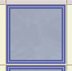
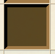

Phases
A game of YAGG has 2-3 phases, depending on the game type.
Recruitment
Some game types begin with a recruitment phase. Both players select desired units and then press "RECRUIT".
Placement
Select the starting position of your units. The only unit you must place is your Monarch or Flag, All other units may be left in your hand to be placed later. After placing your units press "READY" to start battle.
Battle
On your turn you must do one of the following
Move
Units move one square at a time. Units cannot move diagonally. Some units are immobile. They can neither move nor attack.
Attack
Moving your unit into a square that has an enemy unit is an attack. If the attacker's Attack is greater than the opponent's Defense the opponent is destroyed and the attacker will move into the defender's square. Otherwise the attacker is destroyed.
Place
Units can be placed in the battle phase the same as the placement phase.
Ability
Some units have special abilities. Using any ability will end your turn
Triggers
Some units have abilities that trigger under certain conditions
Move
A move trigger will activate after a unit moves. If a unit loses a battle it's move trigger will not activate.
Attack
Attack triggers activate before a unit attacks. Attack triggers may change how a unit does battle, or prevent battle from happening entirely.
Death
Death triggers happen immediately after a unit dies. In a battle if the opponent dies, the death trigger will happen before the attacker's move trigger.
Board
The board size varies from 5x5 up to 8x8. Boards also have water or block squares that affect gameplay
Water
Units cannot cross water, but some special abilities can cross over the top of water, such as Maycorn's spark or Howloo's horseshoe.
Water squares can only be moved by Busybody's special ability.
Block
A block can be pushed by a unit if the square on the other side is empty. Otherwise a block will block movement. Blocks are moved by special abilities the same as units.
If you are trying to push a block but it will not move, there is likely an invisible unit on the other side.
Game Types
Different game types have different units, board, phases and win conditions
Fivers

Recruit 8 units to protect your monarch. Can win by killing your opponent's monarch or moving your monarch to the opposite side of the board
Iceslide

Recruit 12 units to protect your monarch. Kill your opponent's monarch to win. All units will slide until they encounter an obstacle.
Strat

Capture the opponent's flag. Unlike monarchs, flags cannot move.